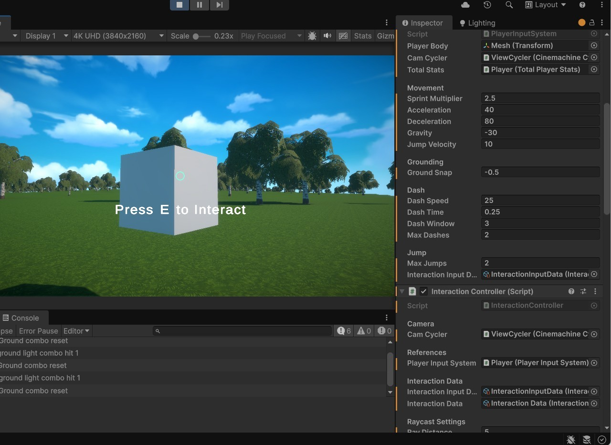
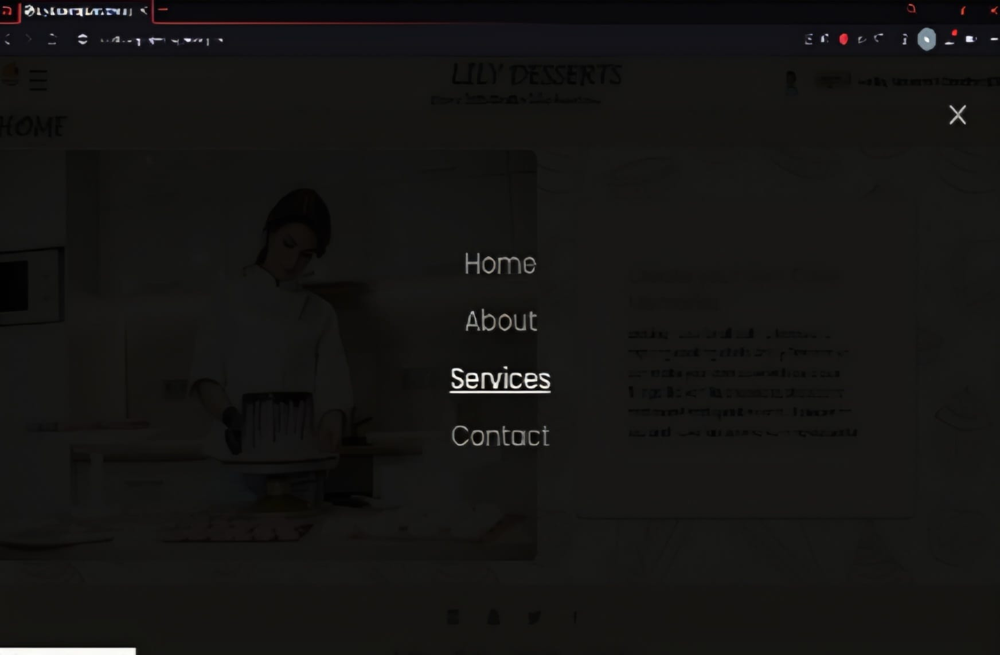
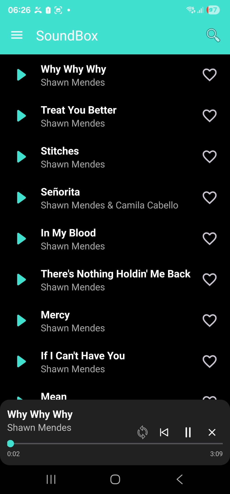
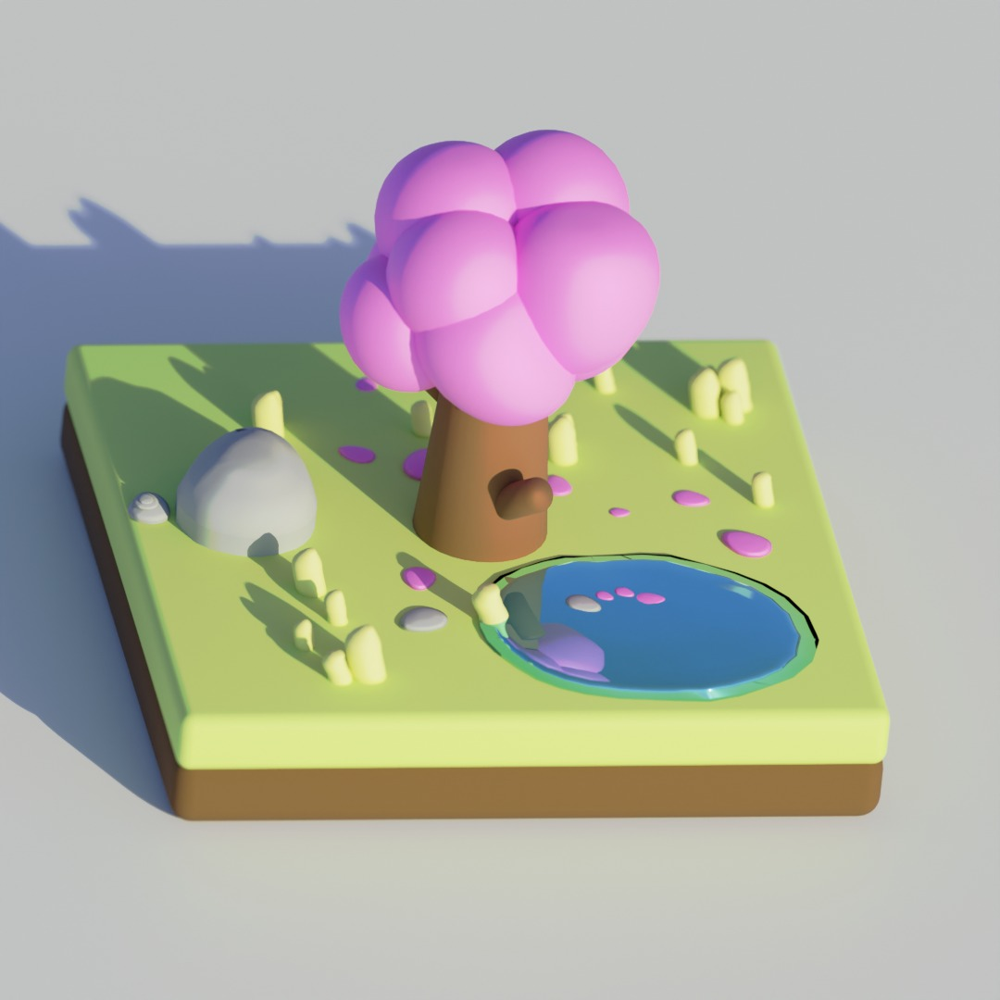

Website Diagnostics v1.19
Independent local toolkit for finding product-data inconsistencies, reviewing website issues, and preparing client-facing reports. Includes practice datasets, evidence review, and testing workflows.
Developer portfolio · Bucharest, Romania
E-commerce Development · Python & Data Workflows · Game Development
Fourth-year Computer Science student and e-commerce developer. I work with website troubleshooting, supplier catalog processing, product data normalization, and ERP-related workflows, while independently exploring game development and embedded systems.
I enjoy solving technical problems that make a difference in day-to-day work: tracing website issues, turning inconsistent product information into usable records, and building practical automation and data-validation workflows. I also enjoy the creative side of software engineering, especially gameplay systems and interactive experiences.
I approach projects through debugging, iterative improvement, and careful verification. Outside development, I sing and play guitar and have participated in four university charity performances.
Contribute to an online storefront and supporting product-data workflows, combining development, troubleshooting, and operational tasks within a small technical team.
Employer details and internal systems are intentionally excluded from this public portfolio.
Handled transactions, stock rotation, merchandising, store organization, and customer interactions in a busy retail setting. Developed practical communication, organization, and time-management skills.
Areas of study include algorithms, data structures, software engineering, operating systems, web and mobile applications, and embedded systems.
Independent, academic, and practice projects. Public source-code links are included where available.
Independent local toolkit for finding product-data inconsistencies, reviewing website issues, and preparing client-facing reports. Includes practice datasets, evidence review, and testing workflows.

Developing gameplay systems for a roguelike with RPG elements, including movement, enemy behavior, interactions, and abilities, while exploring different camera perspectives.

Developed a bakery-themed online shop with authentication, a virtual balance system, shopping cart, customizable products, and order-management functionality.

Created a music-listening Android app featuring sign-up and sign-in, email verification, favorites, playlists, and background playback.
Prototype that monitors temperature and humidity and responds to defined conditions by controlling cooling-related hardware.
Built a two-button Snake game and a timed shape-matching reaction game with a score system, both designed for small OLED displays.

I recently started learning Blender on my own and created this stylized low-poly diorama as practice. It helped me explore basic modeling, lighting, color balance, composition, and simple environment design.
Small real-time strategy prototype with unit interactions and basic gameplay logic.
Lightweight system for solving first- and second-degree equations and generating graph visualizations.
Open to relevant technical opportunities, collaboration, and clearly scoped freelance work.